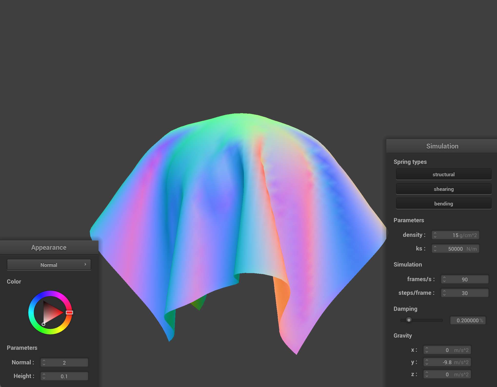
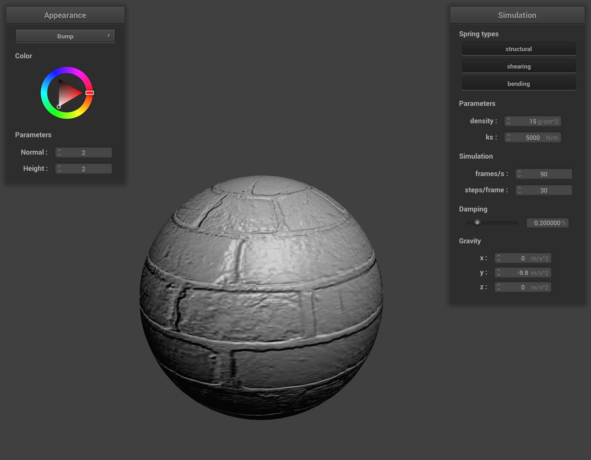

In this homework, we implemented a real time simulation of cloth using masses and springs as a basis. We implemented methods that would test for collisions with other objects as well as with itself to ensure the cloth simulation was smooth. We also implemented specific shaders to add detail and change the way objects looked.
Part 1: Masses and springs
only shearing.
no shearing
All three contraints
Without three contraints
Part 2: Simulation via numerical integration
ks = 1000 N/m, The effect of changing the spring constant Ks affects the overall stiffness of the cloth. With a very low Ks this means that the force needed for displacement is very low allowing for a lot of movement in the overall cloth simulation with much more ripples.
ks = 50000 N/m, Compared with a high Ks this restricts the movement/displacement of the cloth due to a much higher force needed for the same displacement.
Density = 1 g/cm ^ 2, For density: a very low density has a much lower inertia allowing for and has significantly more stretching due to the force of gravity activating on the cloth.
Density = 100 g/cm ^ 2, Compared with a much higher density, which has less physical deformations allowing for a much stiffer look to it.
Damping = 0%, Damping seems to affect how the simulation is affected by the oscillations and motions and how it dissipates those forces. A very low damping shows lots of movement allowing the cloth to swing back and forth
Damping ~ 80% Compared to a high damping which has much better resistance allowing it to come to rest in much less time than its counterpart
Part 3: Handling collisions with other objects
For the sphere collision: We iterate over each point mass (pm) in our pointmasses Vector along with a nested for loop iterating over all of our collision objects. We get the distance between the position of the point and the origin of the sphere to see if this pointmass is inside the sphere. If it is, we extend the path from the pm to the sphere’s surface to find the intersection point and then apply the correction vector to bump it up to the surface of the sphere and set this to be the new position of the pm position.
For the planes collision: Similarly like in sphere collision, we iterate over the point mass object in our pointmasses vector with a nested for loop. In the Plane::collide method we check the distance between the point mass and the plane but a key difference is checking which side the plane we lie on. We take the direction between the position of the pointmass and the position on the plane and dot product this with the normal of the plane. We do this with the current position and the last position. We then check if the two positions we just calculated fall on opposite sides meaning that the pointmass goes from one side of the plane to the other. Additionally we also have a fabs(last position) as a rounding offset to see if it's extremely close to the plane and still update the pm position if it is true. The correction vector is calculated as a point a little above the intersection point with a surface offset. We also must adjust our correction vector to be scaled down by friction (1 - friction) to get the final position for the point mass.
The ks = 500 N/m has the cloth drooping the most with the most folds and wrapping much more closer to the sphere as a result. It sways considerably after its drop and folds inward.
ks = 5000 N/m, considerably less stretching but still a decent amount of folds and is loose enough to have a significant amount of swaying after its initial drop. Additionally it conforms less to the ball than 500 but more than 50000.

Lastly, ks = 50000 N/m has the least amount of stretching and bending the cloth seems to maintain more of its original plane shape. There are the lowest amount of folds and additionally least amount of contact with the sphere.
The image above is the base version of the cloth just lying at rest on the plane.
Part 4: Handling self-collisions
To implement self-collisions, three methods were created to achieve this. Hash_position takes in a Vector3D of a position in which we then hash so that we can find a unique identifiable box object allowing us to populate the hash table map. To hash we multiply the height and width by three and divide by the respective num_height/width points set these values to h and w. Then we take the floor of each axis of the position by w, h, and t respectively where t is the max(w, h). We multiple these unique floored values by 3 arbitrary numbers and add them up to give a unique_hash. Lastly, we use the fmod value to truncate the points to the nearest 3D box which consists of the unique hash value and w + h + max(w, h).
Now with our hash position function we use that to build a spatial map. We iterate over the point_masses and call the hash_position on each individual pm to get a key. If the map can find the key we pushback the pm otherwise we instantiate a new instance of vector at that map[key] to allocate space to the map.
Lastly, for self_colllide we iterate over all the pm_candidates from creating the map. For each pair between the point mass and candidate point mass that we normalize we check to see if the distance is < 2 * thickness, if it is we then compute the correction vector. The correction_vector for this pair of point masses, once calculated, is added to a final correction vector. We have a total_corrections needed so for every point where this happens we add one to it. So at the very end we can average all these pairwise corrected vectors and divide the final correction by total corrections scaled down by the simulation steps for accuracy .
We also edited our Cloth::simulate to account for self collisions. We first call build_spatial_map to create the map and then iterate through each point mass and call self_collide on it.
self collision part 1
self collision part 2
self collision part 3
self collision part 4
self collision part 5
ks 5000, density 15 -default-
ks 500, density 15
Low ks: Much more deformation due to the low spring constant, it appears to have a much more flowy and loose object shape.
ks 50000, density 15
much more rigidity and less overall folds in the cloth, resisting the force of it hitting itself, the overall bounces aren’t oscillating as much.
ks 5000, density 150
High density: The overall cloth object is more fluid and has more oscillations bouncing on itself more taking a longer time to come to a resting state.
ks 5000, density 1
Low density: The cloth is more stiff, folding less times upon itself.
Part 5: Shaders
A shader gives a schema on how to shade and shape each surface or model appropriately. Different shading frequencies and types can give the overall object a distinct and unique appearance. A shader includes lighting, color, finish, and texture. A vertex shader allows for transformations of the different vertex positions in space allowing to calculate per-vertex values which are inputted into the fragment shader which applies lighting, textures, and pixel effects outputting a final color for the pixel. They work together directly by designating different tasks that get sent down the graphics pipeline. The Vertex works to prep and process the geometric information while the fragment uses that data to calculate the per-pixel final color.
The Blinn-Phong shading model breaks up how objects interact with lighting into three separate components. It uses ambient lighting, diffuse reflection, and specular highlights to get the final lighting color. Breaking these down: ambient shading gives the object a base color preventing black shadows which is just the result of multiplying the ambient coefficient by the ambient intensity. Diffuse reflection is the light that spreads across the object surface aka how it “diffuses”. To calculate take the diffuse coefficient multiplied by the illumination and max(0, n*l) where n and l are the normal and unit vector from the light source. This ensures that no light is reflected back. Lastly, Specular highlights simulate the intensity of light reflecting on surfaces especially those with “glossy” materials. The equation is the specular coefficient multiplied by the illumination (across its area) and multiplied by max(0, n * h)^p where this calculates the cosine angle between the normal and halfway vector. We take the max of 0 and n*h to make sure that if it exceeds the threshold it doesn’t reflect on the other side. The p is the specular exponent property dependent upon what the material is.
Ambient
Diffuse
Specular
Blinn-Phong (All)
Custom texture on Cloth + Sphere.
Cloth with custom texture drooping on top of sphere.
Bump shader applied to sphere mesh and cloth
Bump shaded cloth on top of sphere
Displacement shader on sphere.
Displacement shaded cloth on top of sphere.
Comparing bump and displacement mapping, bump simply modifies surface normals to “simulate” a change in the height and width texture to change the appearance of the surface. It uses a tangent-bitangent-normal matrix to transform objects from object space to model space allowing for access to the height map. The overall shape of the original mesh doesn’t change. Compared to displacement mapping, which makes a physical displacement to the actual object through modifying the vertex positions of the original model, we add a scaling factor to the value so that the model is consistent with the geometry of having physical “bumps”.

Bump shader on sphere with 16 x 16 resolution.
Bump shader on sphere with 128 x 128 resolution.
Displacement shader on sphere with 16 x 16 resolution.
Displacement shader on sphere with 128 x 128 resolution.
By changing the sphere mesh’s coarseness we noticed that with bump shading, there really wasn’t any changes/improvements with the appearance of the sphere. The lighting effects are slightly better at a higher resolution but other than that there are really no differences. We believe this is because the bump shader doesn’t actually change the geometry of the mesh, just the appearance of the surface so it doesnt really rely on the amount of vertices. With displacement shading, there were more differences we observed. With a higher resolution, the displacement was slightly more detailed as compared to the lower resolution. Since the displacement shader does affect the geometry of the mesh this would mean that it does rely on the amount of vertices which is why we see more detail with higher resolution.